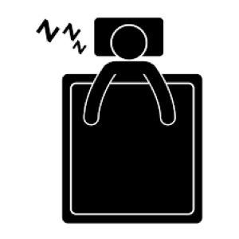

1.水分補給!!!
運動で失われた水分を補給し、血液やリンパの巡りを良くして体外へ排出することが大切!!
冷水ばかりを摂取すると代謝が下がるため、運動後は常温か温かい飲み物にすると良い!!
2.筋トレ後30分以内にプロテイン補給!!!
筋トレを頑張った後、筋肉を修復する材料が十分にないと思うような筋力アップにつながりません!!
そのような事態を防ぐためにも、筋トレ後30分以内にプロテインを補給しましょう!!
たんぱく質だけでなく、アミノ酸や消化吸収をサポートするビタミンも含まれている飲み物であるとより効果的です!!!

3.十分な睡眠!!!
睡眠時に分泌される「成長ホルモン」は筋肉の回復力を高めてくれます!!
良質な睡眠をするためにも、入眠する2~3時間前に食事を済ませておくことも大切です!!
お風呂は熱湯にさっと浸かるよりも、ぬるめのお湯にゆっくりと浸かるほうが安眠に効果的です!!!
4.筋トレしない「お休み期間」!!!
運動に慣れている方は週3日、慣れていない方は週2日をトレーニング日として残りは「お休み期間」
としましょう!!
筋トレを休まずに続けると、いくら鍛える部位を分けたとしても、全体の疲労感やだるさが抜けづらくなってしまいます!!
より良い筋力アップを望むのなら、休息日を設けるほうが効果的です!!

5.ストレッチ!!!
筋トレ後は、筋肉が緊張し硬くなってしまいます!!!
ストレッチをして十分にほぐしておくことで、血流がよくなり疲労回復効果がアップされます!!!
他にも、けがの防止にもつながるので、筋トレ後のストレッチはおすすめです!!!